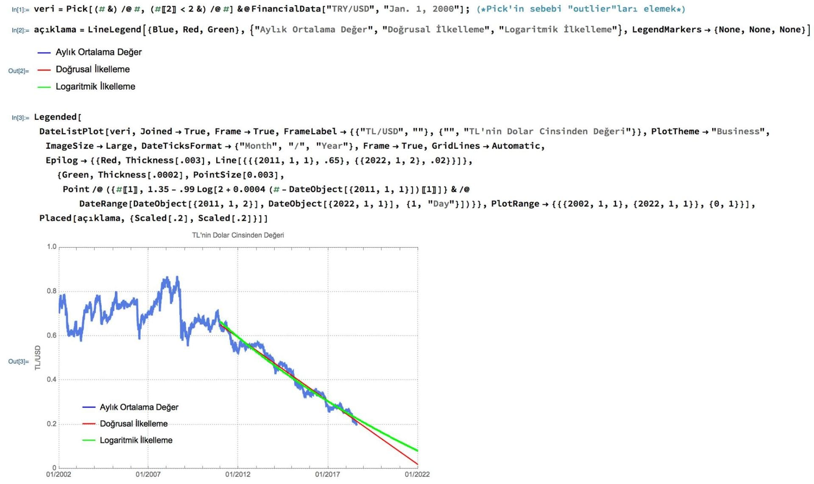
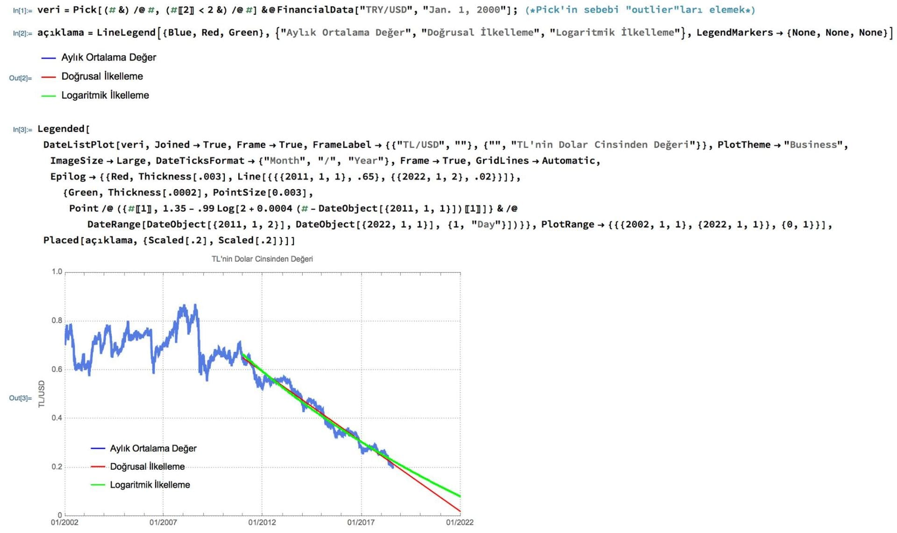
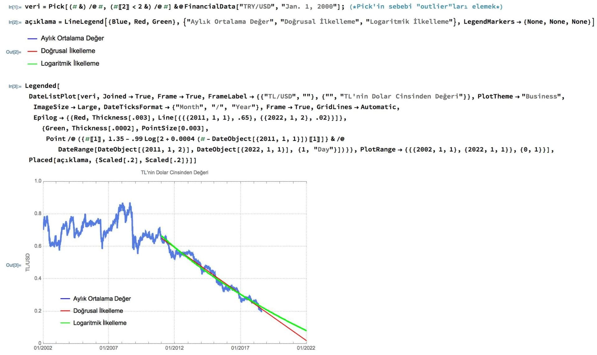

Ekteki ilk resim TL’nin Dolar cinsinden değerinin son 16 yıldaki değişimi ve 2011’den bu yana sürdürdüğü düşüşü korursa önümüzdeki yıllarda alabileceği değerlerin grafiği. İkinci resimde de bu grafiği çizdirmek için kullandığım Mathematica kodu var.
Mathematica’da "FinancialData" komutu ile doğrudan herhangi bir tarihin kur bilgilerine ulaşabiliyorsunuz. Bu ulaştığınız bilgileri "DateListPlot" komutu ile de doğrudan zamana bağlı grafik olarak çizdirebiliyorsunuz. Bütün komut öz olarak aslında bundan ibaret.
Olayın matematiksel yönü "ilkelleme", ya da daha bilinen adıyla regresyon. Grafikteki kırmızı ve yeşil çizgiler birer fonksiyon, mavi renkle gösterilen kur bilgilerini yakınsamak için bu fonksiyonları kullanıyorsak bu ilkelleme oluyor. Örneğin kırmızı çizgi çok basit doğrusal bir fonksiyon, anlamı da şu: TL’nin değeri her gün sabit miktarda azalıyor, böyle giderse de bir süre sonra değeri sıfıra hatta negatife inecek! Elbette bu kaba bir yaklaşım, çünkü pratikte biliyoruz ki bir para biriminin değeri ne kadar düşerse düşsün her zaman pozitif bir rakamdır (yani ben öyle biliyorum )
İkinci ilkellememiz, yeşil çizgi, logaritmik azalan bir fonksiyon, bu yüzden kırmızı çizginin aksine onun sıfırı görmesi 2 yıl daha fazla sürüyor (2024’ün Ocak sonu gibi sıfır oluyor). Yine de, o da oldukça kaba ve hatalı bir yaklaşım.
Daha gerçekçi bir ilkelleme exponential bir ilkelleme olurdu, özellikle hiçbir t değeri için sıfır veya negatif olmayacağından dolayı çok daha mantıklı bir fonksiyon. İlgilenenler çizdirsin diye ben bunu eklemedim
NOT: Bu paylaşım tamamen Mathematica ve matematik ile ilgili, kur değerini seçmemin sebebi insanların ilgisini çeken bir ortak nokta olması. Yani finansal bir altyapım ya da uzmanlığım olmadığı gibi, buradaki ilkellemelerle de yakın gelecekteki kurla ilgili bir fikir belirtmiyorum! Zaten seçtiğim ilkellemelerin gerçekçi olamayacağını da (negatif değer almalarından ötürü) belirttim. Bu sebeple bu paylaşımı kur spekülatifi olarak falan yorumlamayın.
